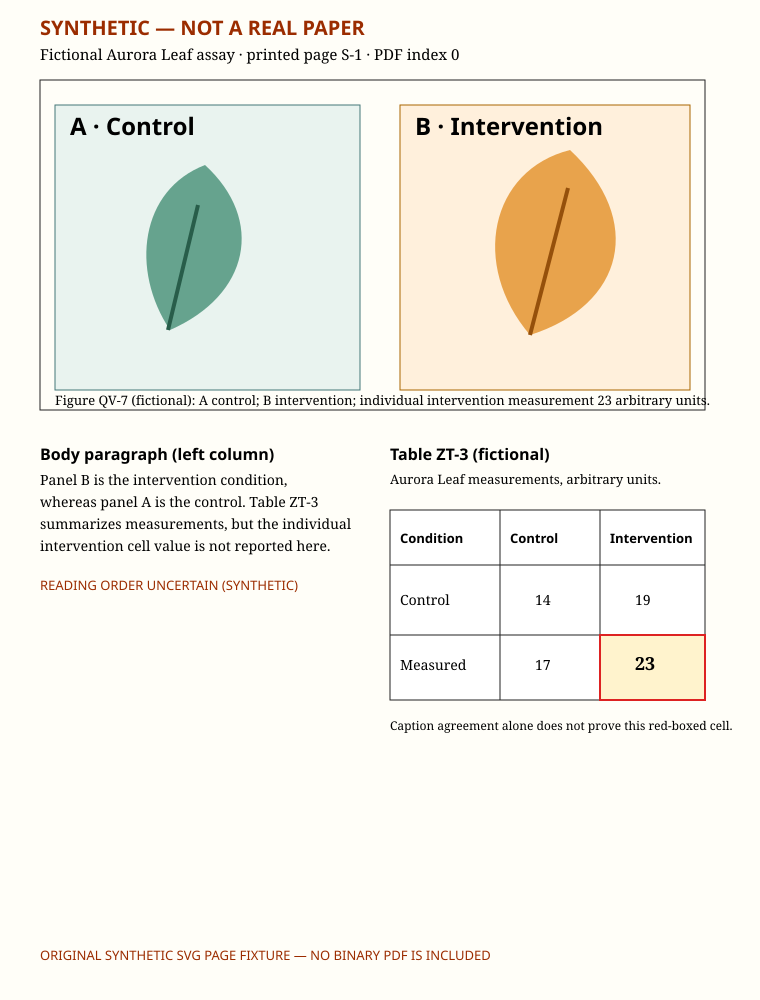
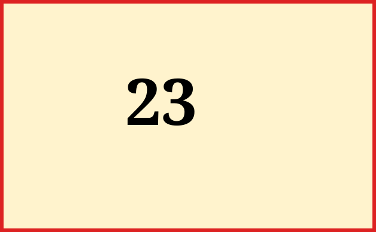

Case synthetic-aurora-leaf-qv7-zt3; validation partial.
Machine visual truth verified: false. The validator checks records and attestations only; it cannot verify actual agent sight or pixel truth.
Coordinates: original-render top-left pixels, [x0,y0,x1,y1], end-exclusive. Colored boxes identify records; original evidence is never replaced.
PDF index 0; printed page S-1; source identity fictional-aurora-leaf-supplement.pdf (identity only; no PDF or content inference).
Columns: 2; reading order: uncertain. SYNTHETIC: left body column and right table column must not be assigned order from extraction alone.
Open original evidence (original_page.svg)

reg-figure-qv7reg-panel-areg-panel-breg-caption-figure-qv7reg-body-panel-discussionreg-caption-table-zt3reg-table-zt3reg-table-row-measuredreg-cell-measured-interventionPage synth-page-000; parent region reg-cell-measured-intervention; original-page source bbox [600, 635, 705, 700]. Crop dimensions: 630×390 pixels.

| ID | Page | Kind | Identity | BBox | Evidence | Source quote |
|---|---|---|---|---|---|---|
| reg-figure-qv7 | synth-page-000 | figure | — | [40, 80, 705, 410] | available | — |
| reg-panel-a | synth-page-000 | panel | panel_label=A | [55, 105, 360, 390] | available | — |
| reg-panel-b | synth-page-000 | panel | panel_label=B | [400, 105, 690, 390] | available | — |
| reg-caption-figure-qv7 | synth-page-000 | caption | — | [40, 395, 705, 425] | available | Figure QV-7. Fictional Aurora Leaf assay: panel A shows the control condition; panel B shows the intervention condition. The corresponding individual intervention measurement is 23 arbitrary units in Table ZT-3. [76:287] |
| reg-body-panel-discussion | synth-page-000 | body_paragraph | — | [40, 445, 350, 600] | available | Body paragraph. Panel B is the intervention condition, whereas panel A is the control. Table ZT-3 summarizes the measurements, but this paragraph does not report the individual intervention cell value. [408:609] |
| reg-caption-table-zt3 | synth-page-000 | caption | — | [390, 445, 705, 500] | available | Table ZT-3. Fictional Aurora Leaf measurements in arbitrary units; column identities are shown in the original table. [289:406] |
| reg-table-zt3 | synth-page-000 | table | — | [390, 510, 705, 700] | available | — |
| reg-table-row-measured | synth-page-000 | table_row | row_label=Measured | [390, 635, 705, 700] | available | — |
| reg-cell-measured-intervention | synth-page-000 | table_cell | row_label=Measured; column_label=Intervention | [600, 635, 705, 700] | available | 23 [665:667] |
SYNTHETIC: Figure QV-7 panel B is the intervention condition.
SYNTHETIC: Table ZT-3 row Measured, column Intervention contains 23 arbitrary units; direct original-cell inspection supports this claim, while absent body corroboration remains a limitation.